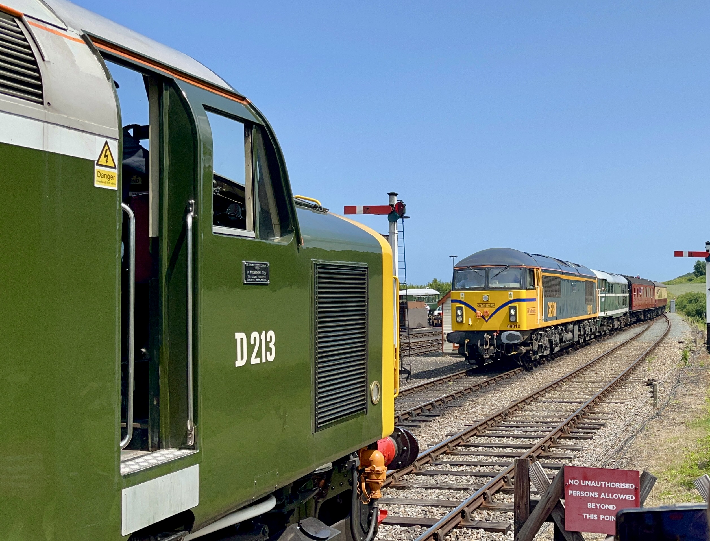
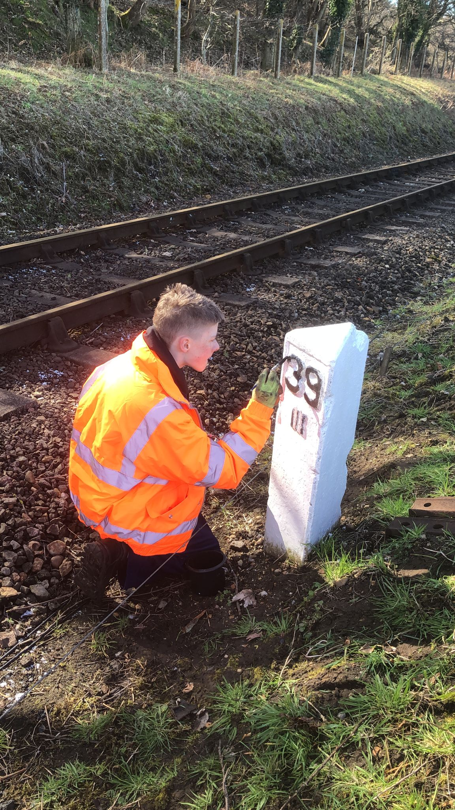
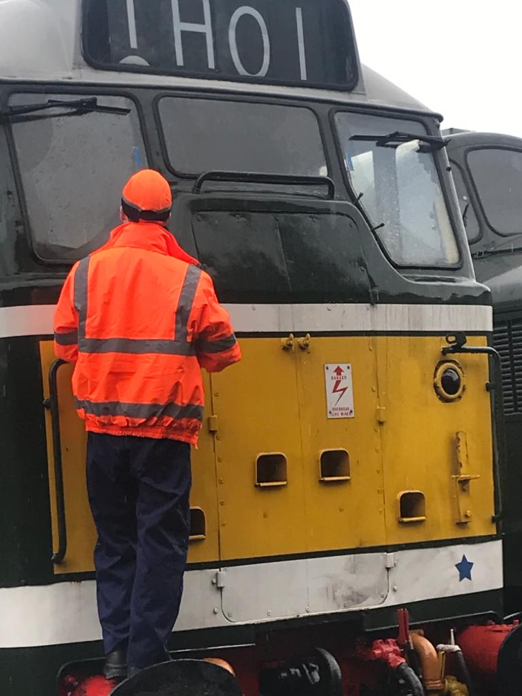
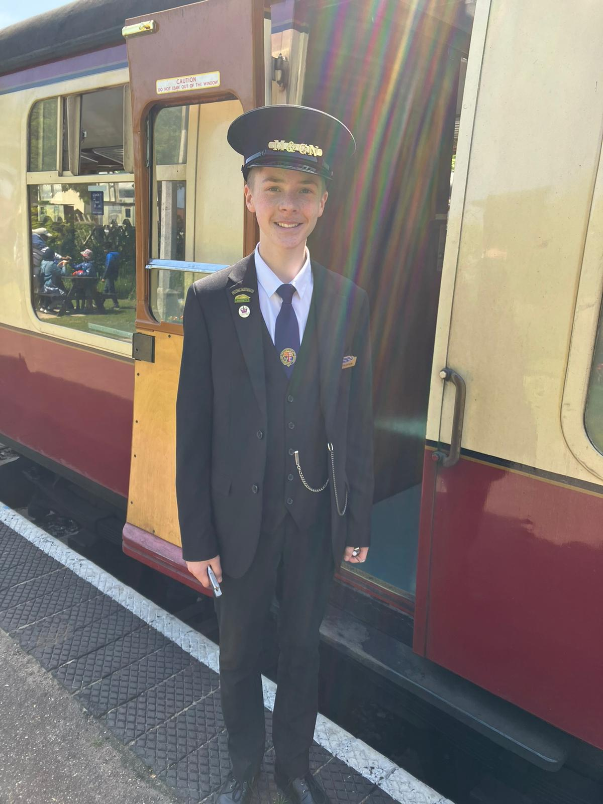
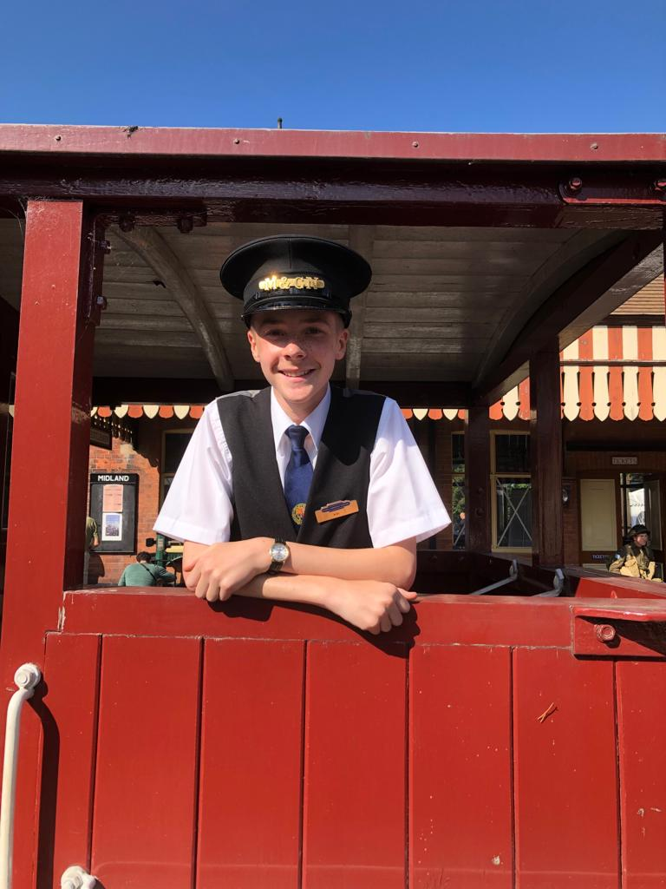
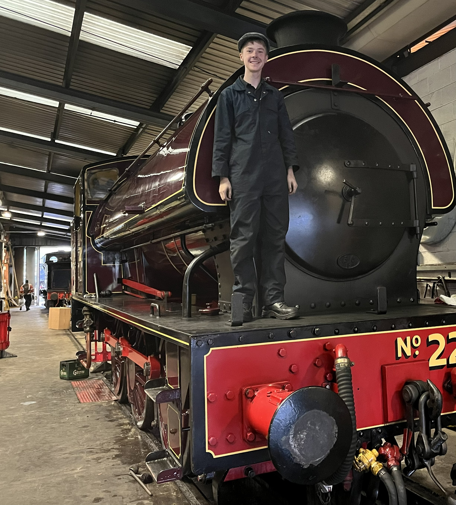
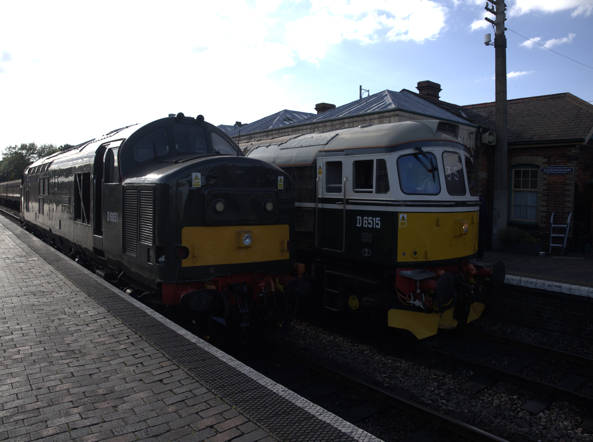
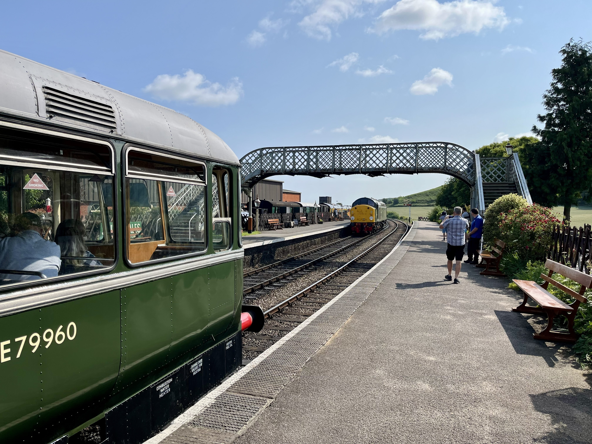
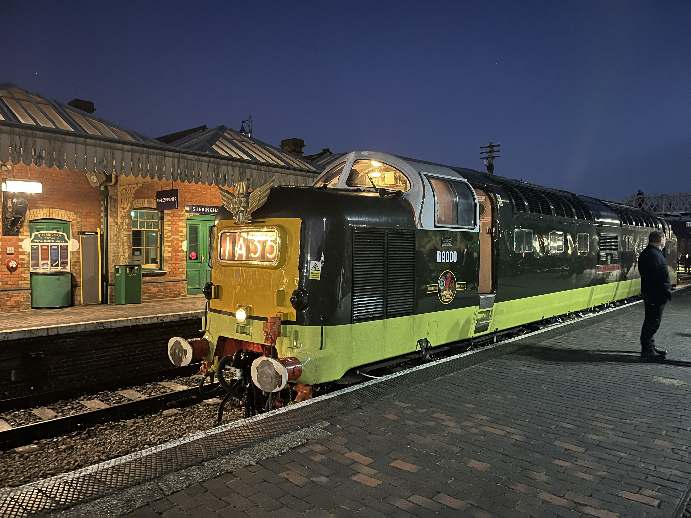

North Norfolk Railway

I Have been volunteering at the North Norfolk Railway since February 2022. Since then, I have gained valuable experience in railway operations and maintenance.
I have filled many roles and spent hundreds of hours contributing to the railway's operations and maintenance.
At age 13, I joined the youth development club, where we had monthly meetings, cleaning locomotives and completing other tasks around the railway.
Once i was 14, I took on the role of working as a platform assistant. I spent countless days working in this position, greeting and helping passengers on the station.
Now i'm older, i've taken on more responsibilities and continue to contribute to the railway's operations.
Gallery
Here are some photos of me volunteering at the railway:







